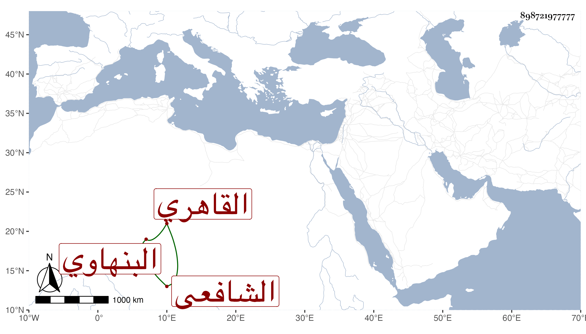

0902Sakhawi.DawLamic.ITO20230111-ara1.EIS1600.898721977777
Biography ID: 898721977777
322
محمد بن محمد بن عبد الله البندر البنهاوي الأصل القاهري الشافعي أخو ناصر الدين بن أصيل لأمه وزوج ابنة الكمال بن الهمام الكبرى ويعرف بالبنهاوي حفظ القرآن والتنبيه وعرضه وتكسب بالشهادة بل باشر في جهات ، وحج مع صهره الكمال وكان مفرط السمن غير متميز في شيء سوى حرصه على جهاته . مات في سنة سبع وسبعين وترك من ابنة الكمال ولدا اسمه المحب محمد تعبت أمه بسببه سيما بعد موت عبد الوهاب الهمامي وإلا فكان في حياته أشبه حتى أنه قرأ علي إذ ذاك في البخاري وغيره كما سيأتي .
